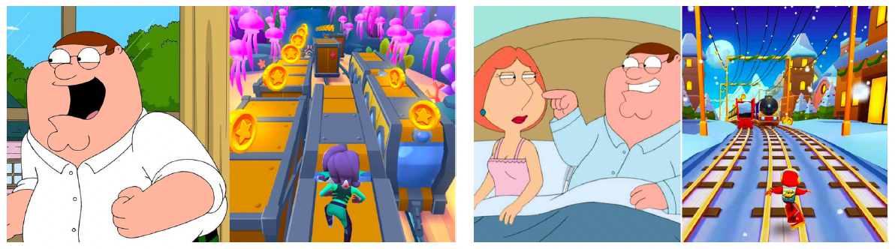
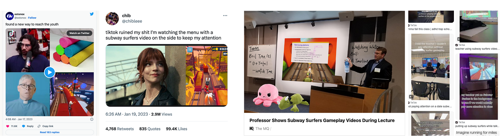

TikTok's Subway Surfer and Family Guy Videos
If you've spent anytime time scrolling through platforms like TikTok or Instagram Reels lately, you've probably stumbled upon videos that have Family Guys clips, a subway surfers gameplay or even oddly satisfying videos playing.

This trend, which skyrocketed in popularity in 2023, has sludged up people's feeds, racking up millions of views and becoming a staple of easy watching. This phenomenon, known as "sludge content," is characterized by its layered approach to media consumption, where multiple unrelated pieces of content are combined to create a visually and auditorily stimulating experience. At its core, sludge content is designed to hook viewers with a barrage of stimuli, ensuring they remain glued to their screens, captivated by the onslaught of entertainment.
The rise of sludge content can be traced back to a simple premise: the battle for attention in the digital age. As social media platforms evolve, so does the competition for user engagement. Creators and algorithms alike have learned that the more visually engaging and complex a video is, the more likely it is to capture and hold viewers' attention. This has led to the creation of videos that aren't just about watching a skateboarder navigate a cityscape or laughing at a humorous clip from a popular animated show. Instead, these elements are combined, often with a layer of visually pleasing "satisfying" content, to create a composite piece designed to appeal to a wide range of sensory preferences simultaneously.
At its heart, sludge content is a response to the changing landscape of viewer engagement. In a world where attention is a scarce commodity, sludge content emerges as a strategic solution to the challenge of keeping audiences engaged. By layering multiple streams of content, creators are able to offer something for everyone, ensuring that viewers remain hooked, whether they're fans of animated humor, exhilarating gameplay, or the simple pleasure of watching visually satisfying clips.
What makes sludge content so compelling is its ability to keep viewers watching just a little longer. Every millisecond counts in the economy of attention, and sludge content masters the art of engagement. By offering a smorgasbord of stimuli, these videos tap into our innate curiosity and desire for novelty, making them incredibly easy to watch and, more importantly, to keep watching.
From people joking about watching movies with a subway surf video to retain attention, to having a desk set up that permanently has one these videos playing.

As we look towards the future, the question remains: What impact will sludge content have on our viewing habits and attention spans? While it's undeniable that these videos offer a unique and engaging viewing experience, there's also a growing conversation about the long-term effects of consuming media in this hyper-stimulated form. Will our brains adapt to crave more complex and layered forms of content, or will there be a pushback, a yearning for simplicity and depth in what we watch?